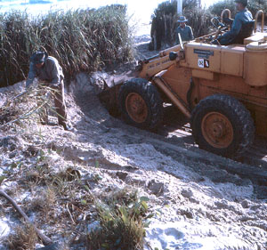

- Beach Protection
- Sunshine Coast beaches
- Mining lease
- Sand is a capital asset
- A living beach
The sloping sands and adapted vegetation of coastal dunes are natural buffers between land and the force of the sea. They protect inland areas from erosion and inundation.
As early as 1946 Kathleen McArthur was protesting about the removal of the King’s Beach sandhills, long before beach protection was of public interest. This was an issue she took up in newspaper articles over many years. Attitudes she had to contend with were encapsulated in the words of a woman visitor to Caloundra who remarked that it was a great improvement not having to get out of the car on a visit to the beach.
Actual and proposed destruction of frontal dunes for sand mining, roads and housing development along the Kawana coastal strip became another target for protest by Kathleen and WPSQ in the 1970s. Their concerns were vindicated in February 1972 when not one, but two, cyclones swept down on the Coast. High seas broke through dunes lowered by developers along a section of what is now Buddina, flooding the land behind and necessitating urgent work by bulldozers to construct artificial dunes.
Vital to Kathleen’s campaign to prevent sand mining on the untouched remainder of beach south to Currimundi was her photographic record of healthy dunes, the effects of severe weather, and natural recovery. Published in early 1972 as A Living beach by Kathleen and WPSQ Caloundra Branch, complimentary copies were sent to representatives of state and local government. In the foreword Kathleen posed this question:
Between Currimundi and Point Cartwright there are three miles of living beach threatened by processes everyone now acknowledges to be destructive. Do we, poor in spirit and apathetic, allow this to happen? Or do we, as responsible stewards of our heritage, force our Local and State Governments to resume this area and give it protective management?
Kathleen McArthur Slide Collection
© WPSQ, Sunshine Coast & Hinterland Inc
Lunch Hour Theatre Script With the Environment Trendy, September [n.d.]
With the Environment Trendy, September [n.d.], p 1
[On the importance of beach and dune protection]
The Sunshine Coast IS because of its beaches. There are beaches of golden sand, washed clean twice every 24 hours by the high tides and swept by the winds off the sea. It is our inheritance but we haven’t been very provident with our heritage––we have not only used all the interest, we have dipped into the capital far too deeply and our investment is losing its value. It is time we took stock to save what little is left.
We were never taught to understand the system by our elders. Our forebears themselves did not understand, they simply repeated the mistakes made in Europe and America and in Queensland we simply copied New South Wales and Victoria, the older colonies where the precedent was set.
Now, faced with the poverty of our losses, it is time we opened our own minds to the problems, endeavouring to see it for ourselves, to develop an understanding as a basis for future action, or maybe lack of action if action is out of order when passivity is required.
With the Environment Trendy, September [n.d.], extracts from pp 4, 5, 6, 7
…let us look at the early use of beaches. Until quite recently, practically close up to the end of the 2nd World War, few people other than commercial fishermen actually resided permanently along the coastline. From day one the rural population had been involved in dairying, cropping, grazing and mining.
One took the family to the beach for a holiday and the holidaymakers patronised the rare hotel, or the boarding house, for relaxed swimming, fishing, perhaps a game or two of tennis and much idling. The majority camped and they camped just where they chose, for the field was wide open. Some would look down on the rest from the top of the headlands, but others chose the dunes so they could walk out of their tents straight on to the tidal beach to swim, or fish, play cricket, or wash the dishes, build sand castles or gather shells.
Realising the potential revenue, the LAC [Land Administration Council] or whatever the title was it bore at the time, surveyed and subdivided and sold foreshore land including that in the dune system, probably all drawn up in the mapping office where there is no indication of instability nor any information on the importance of the dune system to the protection of the tidal beach. Sitting in the survey office they couldn’t see how the Spinifex bound and cooled the sand, nor how the trees shaded the sand from the hot rays of the sun and allowed them to survive…
…On Kings Beach there was a barbed-wire entanglement in case of invasion, which was great protection for the environment in keeping feet off the dunes, and so, when the war ended, the dunes had recovered their pristine condition, far better than their condition at the beginning of the war.
But it was not long before the rot set in. 1945, the first Christmas of peacetime brought back the holiday crowds after five years; five years without luxuries such as beach umbrellas. That was not seen as a problem; the people simply went into the dunes and broke branches off the trees to give them shade…
…In September 1946 I learnt that the Shire Council was to knock down dunes on Kings Beach to form a level area where a carnival could be held in the Christmas holidays. Horrified by the idea, I gathered up the two pre-schoolers and canvassed the Kings Beach residents to protest, which they did, and the plan was abandoned. Not to be thwarted, the progressives enticed the Shire Chairman from his farm in the hinterland to the beach where they persuaded him to support their plan. He did so and the dunes came down and the carnival went in and it rained right through the holiday period and it was a miserable failure.
Little by little the dunes came down until by 1950 there was nothing left. The Lifesavers’ hut and two houses built on the foredune had to be removed. Nobody associated the lowering of the dunes with the loss of the beach. It was not in the Press. It was not in the school books. It was not heard in Parliament. Most, or at least many, people even considered it an improvement. Finally, some big seas, without any opposition, actually reached the road behind. Crisis! Roads cost money, ratepayers’ money, but even then it was not acceptable that the dunes were an essential part of the beach system. Then the very same people began advocating revetment walls. Education was what was needed…
With the Environment Trendy, September [n.d.], pp 10, 11
Towards the end of 1971 it was noticed and remarked upon that work on the dunes in the section that is now named Buddina had reduced it to almost nothing, at the estimate of those examining it, 5 feet at the maximum. So the WPSQ wrote to the LC [Landsborough Shire Council] to ask if the dunes had not been lowered beyond the conditions of the lease. The engineer was asked to report, but we never did find out what was in the report, because in February 1972, under the influence of Cyclone Wendy, the sea broke through the lowered dune.
Wendy was followed immediately afterwards by Cyclone Daisy and then the highest tides of the year; the erosion of the whole strand was devastating. The BPA [Beach Protection Authority] much later revealed some statistics. Wave heights had begun to be measured in August 1968 and in the time from that date to Cyclone Wendy, ‘…the mean significant wave height had been 4 feet’. During the cyclone of February 1972 there were occasional wave heights in excess of 30 feet (9 m)––got it! 30 feet!––and significant heights to 19 feet (5.8 m).
On the erosion at Kawana, the BPA reported:
Major and massive wave erosion of the dunes has resulted in beach recession estimated to be at least two chains, and erosion scarps varying in height from 10 to 30 feet.
The Macquarie Dictionary tells us that an engineer’s chain is 100 ft or 30.48 m, so 200 ft or 61 m of beach was lost. (This is presuming that as the officers of the BPA are engineers they were using that measure, but if they were using the measure of the surveyor’s chain it would have been just over 40 metres.)
Yes! It is shocking! But much more than that has been lost to Kings Beach since the war, and for that matter, that has been the pattern on all the popular beaches of Southern Queensland and NSW too
Reproduced with permission of Hugh McArthur; courtesy of Caloundra City Libraries
© WPSQ, Sunshine Coast & Hinterland Inc
Sunshine Coast Weekly Advertiser 21 October 1971
COUNCIL WILL OPPOSE BEACH MINING LEASE
Landsborough Shire Council is to object to an application f or a mining lease lodged by Hooker Mining Pty. Ltd. for a lease of 102 acres just north of Currimundi Creek. This was decided at the general meeting of the Council on Monday.
or a mining lease lodged by Hooker Mining Pty. Ltd. for a lease of 102 acres just north of Currimundi Creek. This was decided at the general meeting of the Council on Monday.
The application was for a 10-year lease to mine for rutile, zircon, tin and gold in an area commencing just north of Currimundi Lake and extending north for approximately three miles. The application will be heard in the Gympie Mining Warden’s Court tomorrow (Friday). The Council’s decision to object followed the receipt of several letters. The Mining Warden at Gympie had forwarded a copy of the application. Letters urging the council to object were included from J. & J. L. Thomson––in the interest of preserving local beaches. A letter from the Caloundra Branch of the Wildlife Preservation Society suggested the application should be investigated fully by the Council and an objection lodged if deemed necessary. Similar letters were received from E.R. & D.R. Dunning, Brisbane, which said they had chosen Caloundra as their favourite area and they didn’t want to see it ruined. Mr. and Mrs. Slavioss, who have land at Golden Beach expressed the same sentiments.
Must Object
The Shire Chairman Cr. Jack Beausang himself moved that Council lodge an objection. ‘We realise the value of mining’s export earnings to the state, but we have all seen what happens when you interfere with the balance of nature. We as a Council would be very foolish not to object,’ he said. ‘However, if the powers greater than we allow the application then we would have to accept it,’ he said. ‘There are plenty of other places to mine, rather than this,’ he said.
Cr. Miriam Westaway said, ‘Council should object strongly to this. Remember what happened to our King’s Beach here. We haven’t got over that yet’. She said, ‘It was very wrong that the application was put to the Gympie paper and not in our local papers. We are the ones most concerned,’ she said.
Support
Cr. J. Collie forecast his support for the mining. ‘This Currimundi area reminds me of a similar area at Kingscliff, in northern N.S.W.’ he said. ‘Mining has taken place there, but they have beautified the area, stabilized it and you couldn’t wish for anything better,’ he said.
Cr. Skerman asked if it were true that back four and a half chains from high water mark would eventually be subdivided. Cr. Barker interjected: ‘Kawana will have run out of its 7000 blocks before then’.
Cr. Beausang: ‘I’m not concerned with that. I am concerned with the frontal dunes. If the government allow mining it should be prepared to finance rehabilitation if the mining company’s efforts fail.’
The motion to oppose the application was carried 12–2, Crs. J. Collie, Beerwah and Cr. Skerman, Glasshouse, dissenting.
Reproduced with permission of Sunshine Coast Newspapers
© WPSQ, Sunshine Coast & Hinterland Inc
Sunshine Coast Weekly Advertiser [1970s?]
Wildlife and Landscape
SAND IS A CAPITAL ASSET
The planting of hundreds of beach-protect ion trees at Mooloolaba on Sunday by ratepayers, without any assistance from the Shire Council, is a sign of the times. People have been made so angry by the repeated failure of Local and State Government to do anything positively helpful in saving our invaluable beaches, they are now doing it themselves.
ion trees at Mooloolaba on Sunday by ratepayers, without any assistance from the Shire Council, is a sign of the times. People have been made so angry by the repeated failure of Local and State Government to do anything positively helpful in saving our invaluable beaches, they are now doing it themselves.
After years of agitation by responsible, concerned people the Government passed the Beach Protection Act [1968], formed the Beach Protection Authority, and the Beach Protection Advisory Board and coastal Shires formed their own Foreshore Committees to watch the local situations––EVERY KIND OF TALKING SHOP! Circumstances since then force one to the opinion that all this was done simply to quieten the agitators, after which our elected leaders went back to sleep again.
Last week the Advertiser published a photograph of the Landsborough Shire Council’s own destructive effort on Kings Beach. The accompanying photograph [Earthmoving equipment active in frontal sand dunes in a Beach Erosion Control Area] shows what is allowed a few feet from high water mark on Shelly Beach. The Maroochy Shire Council (its chairman is on the Beach Protection Authority) is permitting the erection of a large building on Marcoola Beach, thus showing what a waste of paper the Beach Protection Act really is. And, up at Noosa, the ratepayers are fighting the Shire in the courts to prevent an eight-storey building going up even closer to the sea.
Endeavouring to bring these matters before the Beach Protection Advisory Board, we learned that it had cancelled its February meeting as there was nothing to put on the agenda.
This is not good enough. People everywhere are demonstrating their feelings. A letter from Western Australia last week told us that conservationists there are planning a march on Parliament. Our own Government takes no notice of demonstrations unless they are violent. We must use other methods.
There are enough issues to keep any number of conservationists busy: the Barrier Reef, Cooloola, and the beaches predominantly. The preservation of our beaches is an economic as well as a cultural issue here, for our main industry of tourism depends on the state of our beaches.
A statement by Mr. R. J. Benthem, a world authority on beaches brought to Australia last year by the Australian Conservation Foundation, included these words of warning:
The Spanish, French, Italian, and the Greek coasts on the Mediterranean, are almost completely ruined. They have fallen victim to indiscriminate housing development for tourists, as well as residents, and every year there is less for the tourists to see. Australia, too, is beginning to make the mistakes of these countries. I fear that Surfers Paradise will become like the areas of Hawaii, where sand has to be brought into popular beaches by ship.
The situation today is this––either we force our governments into protecting our beaches or we do it ourselves at our own expense. Which is it to be?
Kathleen McArthur
Wildlife Preservation Society of Queensland, Caloundra Branch
Reproduced with permission of Sunshine Coast Newspapers
© WPSQ, Sunshine Coast & Hinterland Inc
Sunshine Coast Weekly Advertiser 13 April 1972
Wildlife and Landscape
SOUVENIR OF THE LAST OF OUR HERITAGE 
Our publication A Living Beach is now on sale. The subject beach of this book is the three-mile section between Currimundi and Point Cartwright under Dredging Lease Applications No. 136 and No. 137, to be heard in the Gympie Mining Warden’s Court on 19th June, 1972.
Over 3,000 people signed ‘forms of objection’ to the mining of this area. Many of these were young people who knew the beach well and loved it. Others objected on principle although without first-hand knowledge––the principle that tourist beaches should not be mined. While many would have wished to visit the area, its very inaccessibility, except for the hiker, prevented that, for, in truth, it is still a wilderness beach.
When D.L.A. 135, the forerunner to D.L.A. 136 (the first application which we opposed was refused by the Mining Warden on technicalities and the Company immediately re-applied) was first advertised last September, I found that just when they were wanted urgently, I had only one black and white photograph of the area, all my others having been taken further south on the wildflower reserve beach. The delay caused by the re-application provided time to get together a good collection of pictures with the beach in a most healthy state––a state in which it will not be seen again for years, if ever, for unless we meet the challenge before us to save this last section of our living beach, the future will never see it restored.
Then came the cyclones and the high tides and they brought most spectacular erosion, dramatic, dynamic landscape that so few braved the elements to watch. Waves over 30 ft. high, building up and crashing down on the shallows, then roaring into the dunes, grabbing tons of sand at a time and dragging it back to sea! I would not have missed those ten days despite the fact that I did $55 worth of damage to my camera and lost two spools of film thereby, containing invaluable data. It was thrilling to be witness to the force and the fever of the sea gone mad––madly attacking our land, licking off thousands of dollars worth of sand with one mighty tongue of water.
In those 10 days, from February 7–16, the sea took from us millions of dollars worth of property and we will not get it back from her without a certain amount of humility. At least enough to acknowledge that we will be the losers as we have been in the past, if we fail to respect the role played by the sea and the land and their umpire, the sand-dune buffer area. Where our beaches have been concerned, we have ‘cut off our nose to spite our face’, as our mothers used to say.
Much of what happened in those ten days was recorded on black and white film and may be seen in the thirty-six photographs of A Living Beach, for this book is entirely restricted to the mining applications area––the last of our living beaches. It is published for the people of the Sunshine Beach [Coast] specifically, although its principles of beach ecology apply more generally.
 Many complimentary copies have been donated. They have gone to government and Local Authority representatives, to all district High Schools, to every newspaper circulating in the area for review, and to other conservation organisations. The remainder are for sale to the public at the price of one dollar. Enquire at your local bookshop or newsagent, and if not available, order by post, enclosing one dollar plus 7c postage, from P O Box 71, Caloundra, 4551.
Many complimentary copies have been donated. They have gone to government and Local Authority representatives, to all district High Schools, to every newspaper circulating in the area for review, and to other conservation organisations. The remainder are for sale to the public at the price of one dollar. Enquire at your local bookshop or newsagent, and if not available, order by post, enclosing one dollar plus 7c postage, from P O Box 71, Caloundra, 4551.
A Living Beach is a first-class publication from the Weekly Advertiser Press, printed in offset in an edition of 1000 copies. It will never be reprinted and so will shortly become a valuable collectors’ piece.
Kathleen McArthur
Caloundra Branch, Wildlife Preservation Society of Queensland
Reproduced with permission of Sunshine Coast Newspapers and Hugh McArthur
Kathleen McArthur Slide Collection
© WPSQ, Sunshine Coast & Hinterland Inc